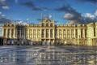
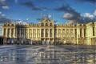

Madrid
Cidade vibrante, de luz e calor,
Onde a história se cruza com a modernidade.
Nas ruas de pedra, a vida tem cor,
E o passado ecoa em cada identidade.
Dos jardins do Retiro à Plaza Mayor,
Um coração que nunca para de pulsar.
Madrid é paixão, é viver com fervor,
Um lugar para sempre recordar.